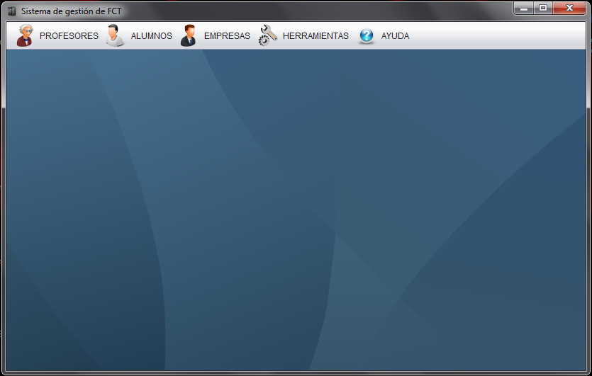

Esta es la ventana principal del programa de gestión de las FCT, es nuestro escritorio de trabajo. Desde esta ventana tenemos acceso por medio de la barra de menú a las diferentes opciones de gestión que nos ofrece la aplicación. Las ventanas de gestión que desplegemos se quedarán dentro de éste área de trabajo
